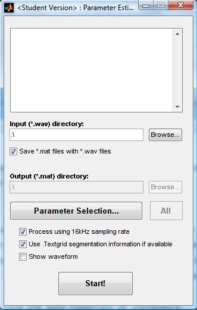
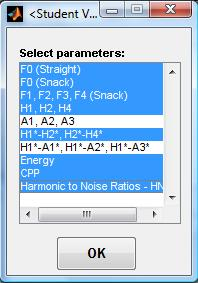
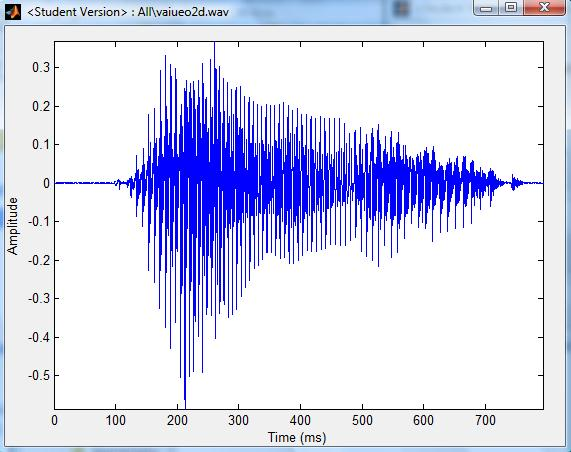
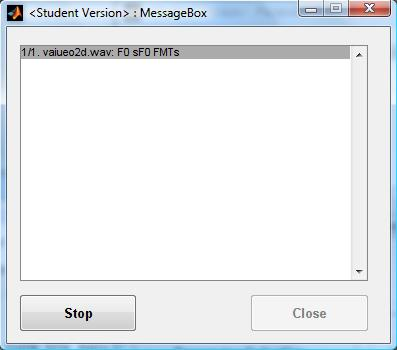
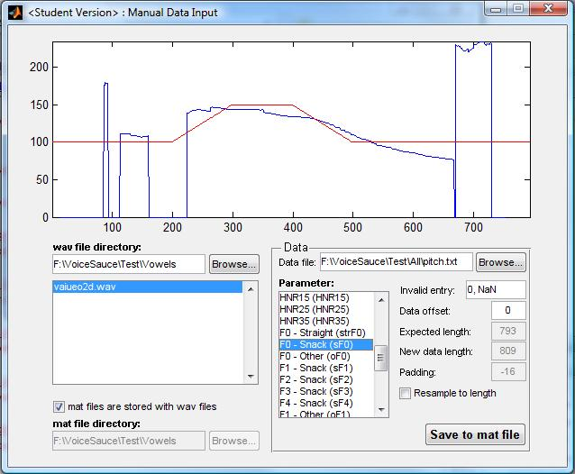
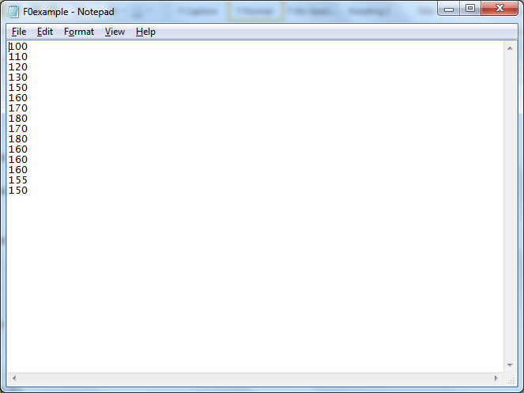
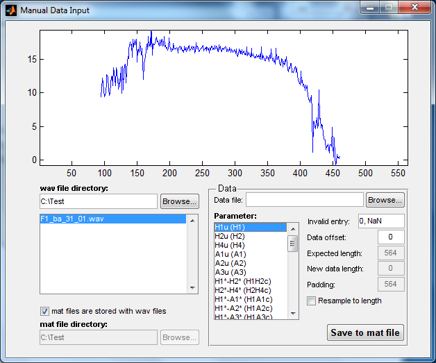
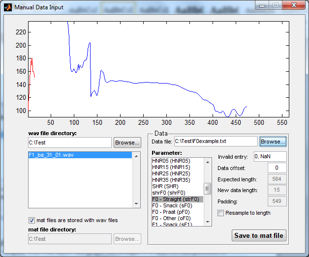
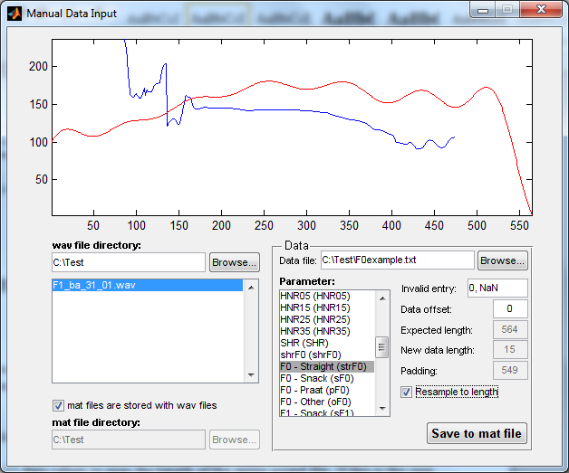
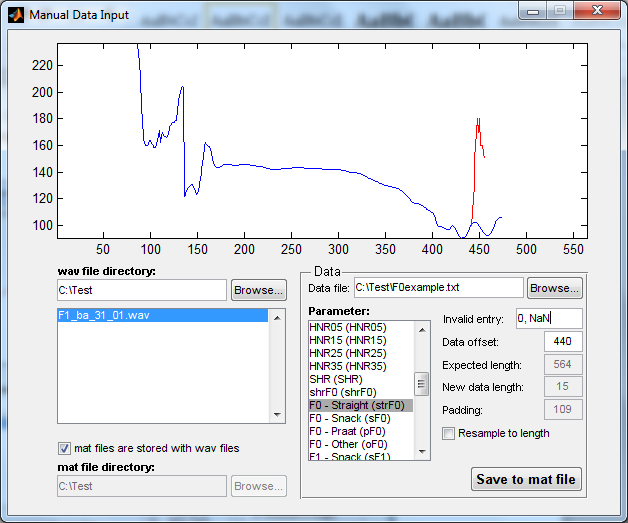

This section of the manual covers the two sections of VoiceSauce involved in inputting and measuring data - Parameter Estimation and Manual Data Input. Parameter Estimation is where VoiceSauce is instructed to make various acoustic measurements. Manual Input is a section where users can load in previously measured data, such as a pitch track calculated using a different algorithm, and instruct VoiceSauce to depend on it when calculating other measurements. Nearly all users will use Parameter Estimation, Manual Input will most frequently be used only to correct VoiceSauce.
|
The Parameter Estimation window is reached by clicking on the appropriate button in the VoiceSauce home screen. The topmost box displays all the files VoiceSauce has been directed to analyze. When the window is first opened, this box will be blank. The directory containing the files to be analyzed needs to be loaded into VoiceSauce. This can be done by directly typing in the file path to the directory in the field marked Input (*wav) directory:, or locating the directory by using the Browse... button. When a directory is loaded, VoiceSauce will list all the sound files inside in the topmost box.
Below the input field is a toggle box, Save *.mat files with *.wav files. This option is checked by default and will instruct VoiceSauce to save the *.mat files, which contain the acoustic measurements, in the same place as the sound files. If this option is deselected, the Output (*.mat) directory: field will become active, allowing the user to specify where the result files should be saved. |
 |
|
Unless instructed otherwise, VoiceSauce will make all possible acoustic measurements. To prevent VoiceSauce from making unneeded measurements, click the Parameter Selection... button. This will create a pop-up window listing the various measurement options. These include:
By default, all possible measures are selected. Clicking on a measure deselects it, removing it from the analysis. It is possible to selectively add new parameter values to, or overwrite parameter values in, an existing .mat output file. For example, if a new version of VoiceSauce contains a new parameter that was not available (or for some reason was not selected) when a .mat output file was previously produced, selecting only that new parameter now will cause the old .mat file to be updated with this new parameter, not affecting any previously-calculated, or manually entered, parameters (as long as they are de-selected now). As another example, suppose a previous .mat output file contains harmonic amplitudes estimated based on the STRAIGHT F0, but now you want to replace those based on Praat's F0 estimates. Selecting only the harmonic amplitude parameters that you want re-estimated (and under Settings, changing the F0 basis) will cause VoiceSauce to over-write the old values with the new ones, not affecting any other previously-calculated or manually-entered parameters (as long as they are de-selected now). Multiple passes through VoiceSauce, each pass estimating a different set of parameters, is also a way to process large files that run up against memory limitations. For example, leaving Subharmonic to harmonic ratio and Strength of Excitation out of the first pass, and running them separately in a second pass, has allowed us to analyze longer files than would otherwise be possible. |
 |
Near the bottom of the Parameter Estimation screen are three additional toggle controls.
The first, Process using 16 kHz sampling rate, controls whether
or not VoiceSauce downsamples an original sound file with a sampling rate
higher than 16 kHz before doing any analysis. This is recommended for faster
analysis, especially by STRAIGHT, which increases processing time exponentially with higher sampling rates.
This box will not affect files with a sampling rate below 16 kHz – whether the
box is checked or unchecked, the sampling rate will be unchanged.
Use .TextGrid segmentation information if available tells VoiceSauce to look for labeled Praat Textgrids accompanying the sound files. If this is selected, VoiceSauce will only analyze segmented and labeled portions of the sound files, which can dramatically reduce analysis time, especially for long sound files. By default, VoiceSauce will only look in the first tier of a TextGrid and ignore any empty or blank space labels. These options can be modified in the Settings section.
|
The last toggle, Show waveform will open a separate pop-up window, displaying the waveform of the first sound file in the directory. The user may examine the waveforms of additional files by selecting them in the Parameter Estimation window. The Waveform window can be removed by either closing the window or by unchecking the Show Waveform box in the Parameter Estimation window. |
 |
|
To tell VoiceSauce to begin the analysis, click Start! A message box will pop-up indicating the progress of the analysis. This window has two buttons: Stop and Close. When the analysis begins, the Close button will be grayed out. At any time, the analysis can be stopped by clicking the Stop button. Once the analysis is complete, or when it has been stopped, the Close button will become active. Click it to close the window and return to the Parameter Estimation window. |
 |
The manual data input screen is accessed by clicking on the appropriate button in the VoiceSauce home screen.
The objective of manual data input is to:
In order to modify VoiceSauce data, parameter estimation must first be run to generate a draft version of a .mat file. Overwriting of VoiceSauce generated data is achieved by extracting the information from an external data file and injecting it into the previously created .mat file. After this step occurs, the modified .mat file can then be treated like a normal VoiceSauce .mat file. For example, the modified file can be:
As an example, previously generated F0 calculations can be modified by the user, perhaps through a different algorithm, and reloaded into Parameter Estimation. Rerunning the parameter estimations will as a result alter the previously calculated harmonic locations, which are dependent on F0 estimation.

At the top of the window is the parameter display box. When the window is first opened, this box will be empty.
Modifying a mat file can be done in four steps:
The file format for the external data file is very simple. This file should be a basic text file that includes a column of numbers intended to replace the original data. No labels or headings are required.
Please see the example below for an example of the text file.Finally, to overwrite VoiceSauce output with the input data file, click the Save to mat file button.
This example will demonstrate the process of substituting external F0 data for VoiceSauce calculated F0 in a preexisting mat file.
Here is the text file with the F0 data we wish to use. We called this file F0example.txt, and it contains a column of 15 fundamental frequency values.




We now have an updated version of the mat file that includes our own F0 data. We can now output this data to text via Output to Text, or rerun Parameter Estimation to re-generate other measurements such as harmonic values based on the new F0 data. To do the latter, make sure to select only the parameters that you wish to recalculate!